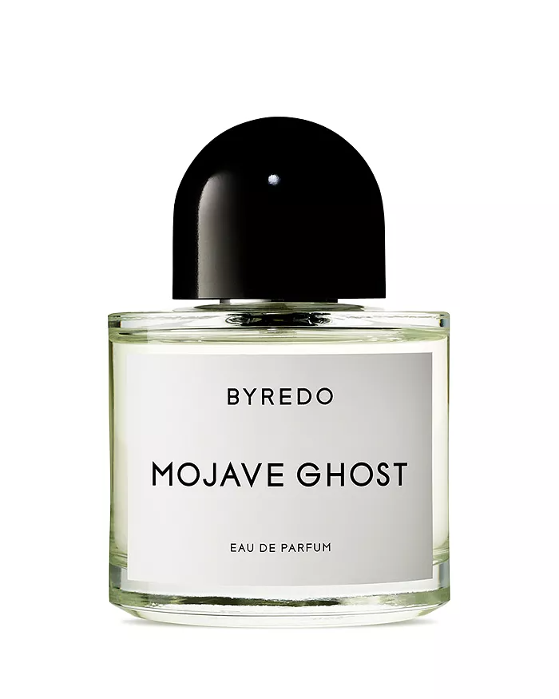
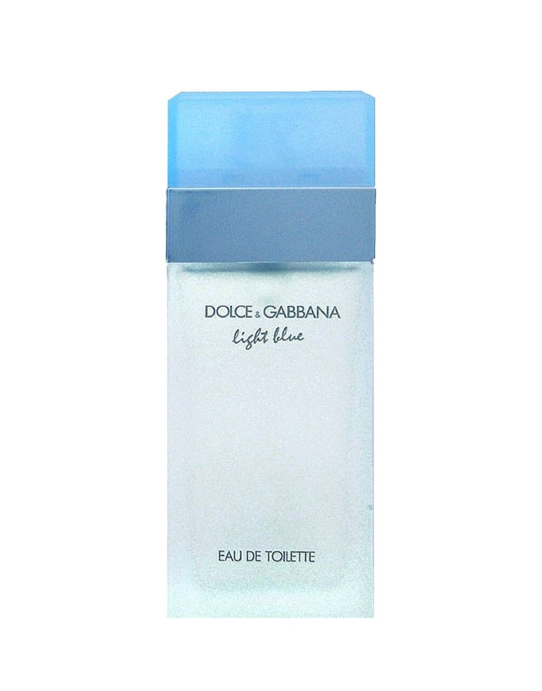
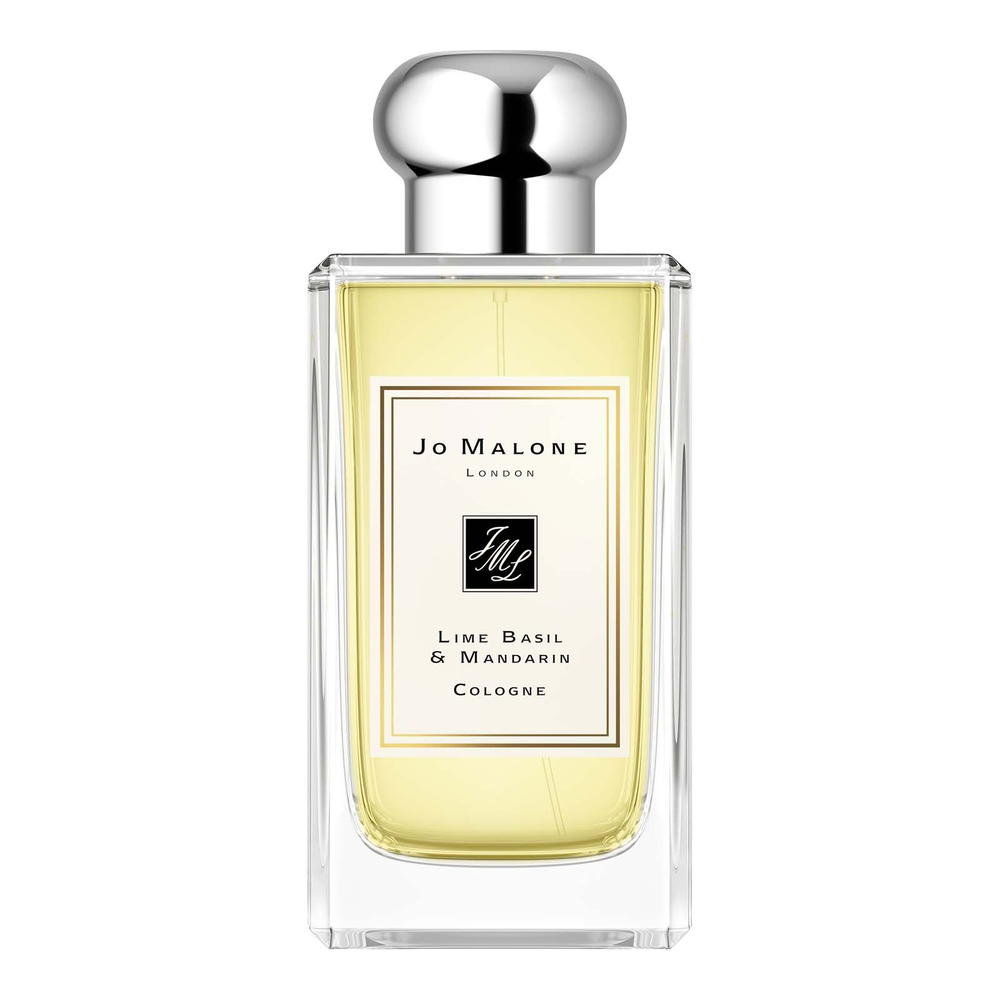

후각은 기억과 감정을 담당하는 부분과 밀접한 연관을 가지고 있는 감각이기에 어떤 향기는 그와 관련된 기억과, 감정을 불러 일으키기 쉽다.
자연스럽게 향기는 누군가에게 시각만큼이나 강하게 인상을 남기곤 한다.
향수는 마치 눈에 보이는 것이 다가 아니라는 듯이, 나에 대한 또다른 인상을 남기게 한다.
눈에 보이지 않는 아름다움을 쫒는 예술적인 부분은 내가 향수를 좋아하는 이유이다.



Lime Baesil & Mandarin - Jo Malone: 나에게 가장 잘 어울린다고 생각하는 향수로, 깔끔하고 쌉싸름한 향의 향수 이다.
대학 동기들과 대만 여행을 가던 중에 산 향수로 그래서인지 뿌릴때 마다 대만에 대한 기억과, 여행을 떠나는 기분을 주는 향수 이다.
탑노트: 만다린 etc.
미들 노트: 바질 etc.
베이스 노트: 앰버우드 etc.
Mojave Ghost - Byredo: 모하비 고스트라는 이름은 모하비 사막의 건조하고 황량한 환경을 이겨내고 피는 고스트 플라워의 매혹적인 생존력에 대한 오마주이다. 실제로 상당히 관능적이면서도 묘한 느낌을 주는 향기이다
플로럴 하면서도 남성적인 매력이 있어 중성적인 향이다. 보라색에 가장 가까운 향이라고 생각된다.
탑노트: 암브레트, 자마이칸 네스베리 etc.
미들 노트: 바이올렛, 샌들우드, 매그놀리아 etc.
베이스 노트: 찬틸리 머스크, 크리스프 앰버, 시더우드 etc.
Light Blue - Dolce & Gabbana: 여름에 가장 어울리는 향수로, 원래는 여성 제품이지만 남성들도 많이 사용하는 항수이다. 신선하면서도,
시원한 느낌을 주는 향을 지니고 있다.